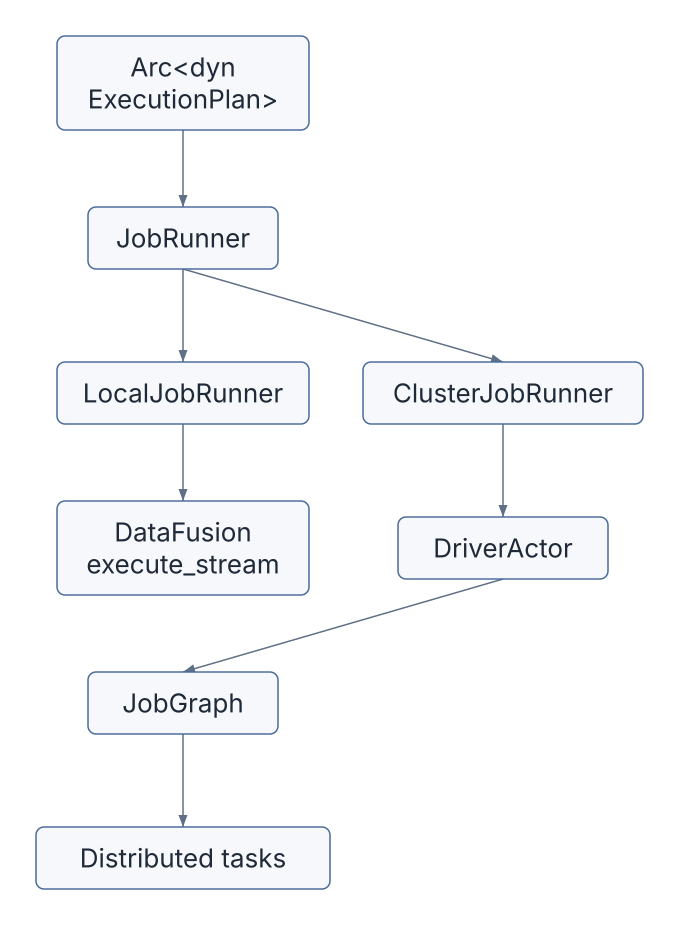
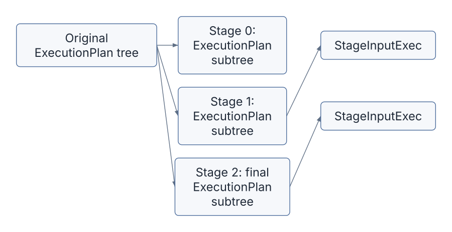
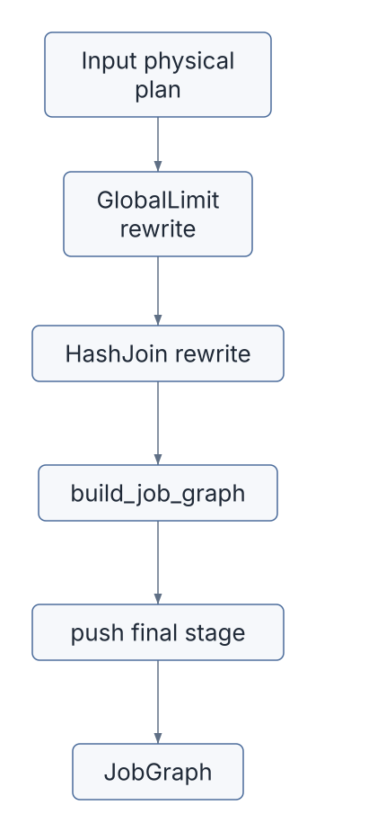
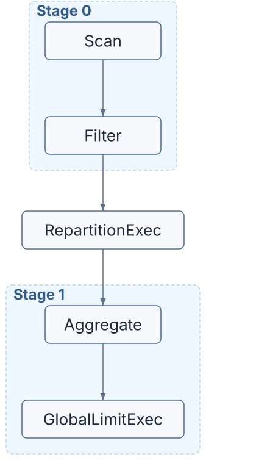
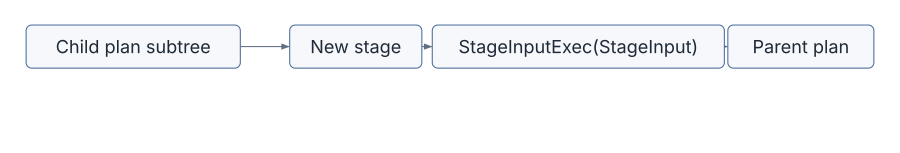
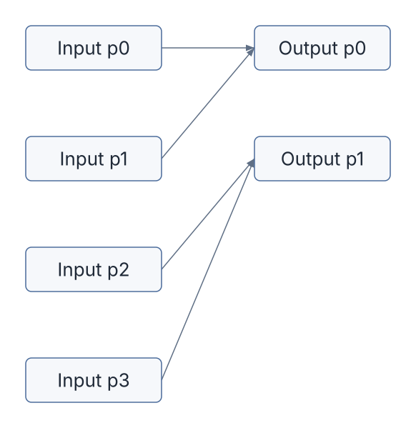
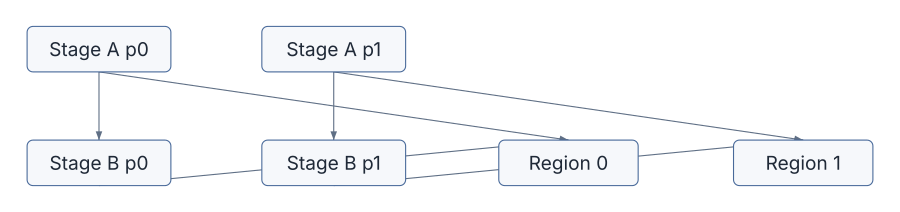
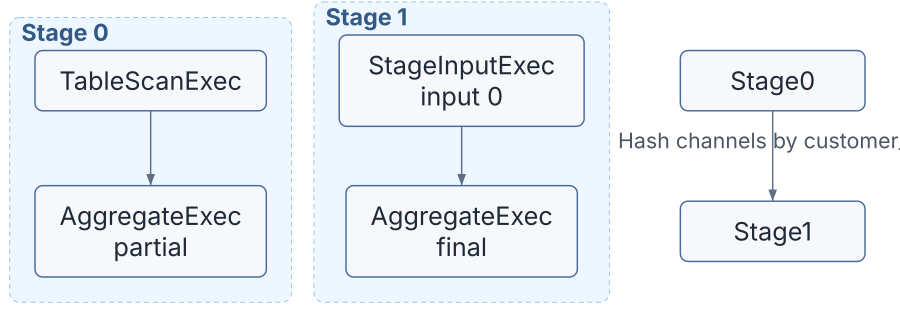
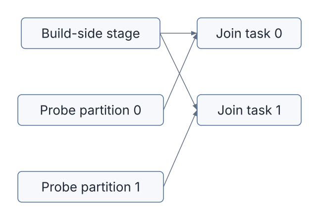

The previous chapter ended with a DataFusion physical plan:
Arc<dyn ExecutionPlan>That is enough for local execution. DataFusion can call
execute(partition, task_context) on the plan and return a
stream of Arrow RecordBatch values.
But a distributed engine needs one more transformation. It has to decide:
In Sail, that transformation is the job graph.
This chapter follows the path:
DataFusion ExecutionPlan -> Sail JobGraph -> JobTopology -> task regions -> task definitionsThe job graph is where DataFusion’s local, partitioned execution model becomes Sail’s distributed execution model.
The main files for this chapter are:
| Area | Files | Role |
|---|---|---|
| Job graph data model | crates/sail-execution/src/job_graph/mod.rs |
Defines jobs, stages, inputs, distributions, placement, and input modes |
| Job graph planner | crates/sail-execution/src/job_graph/planner.rs |
Splits a DataFusion physical plan into stages |
| Job runner boundary | crates/sail-execution/src/job_runner.rs |
Chooses local execution or cluster execution |
| Driver job acceptance | crates/sail-execution/src/driver/job_scheduler/core.rs |
Builds the job graph and creates job output streams |
| Job topology | crates/sail-execution/src/driver/job_scheduler/topology.rs |
Groups stages into task regions and dependencies |
| Job state | crates/sail-execution/src/driver/job_scheduler/state.rs |
Tracks jobs, stages, tasks, attempts, and task states |
| Task definition | crates/sail-execution/src/task/definition.rs |
Defines serialized worker task inputs and outputs |
| Stage input placeholder | crates/sail-execution/src/plan/stage_input.rs |
Placeholder ExecutionPlan node for cross-stage
inputs |
| Shuffle plans | crates/sail-execution/src/plan/shuffle_write.rs,
shuffle_read.rs |
Physical data movement at stage boundaries |
| Job output | crates/sail-execution/src/driver/output.rs |
Merges final task output streams into the client-facing stream |
The first file to read is job_graph/mod.rs. It defines
the vocabulary.
Sail can execute the same DataFusion physical plan locally or through the cluster runtime.
crates/sail-execution/src/job_runner.rs has two
implementations of JobRunner:
LocalJobRunnerClusterJobRunnerThe local runner is intentionally simple:
let plan = trace_execution_plan(plan, options)?;
Ok(execute_stream(plan, ctx.task_ctx())?)It hands the plan directly to DataFusion’s
execute_stream.
The cluster runner sends the plan to the driver actor:
self.driver
.send(DriverEvent::ExecuteJob {
plan,
context: ctx.task_ctx(),
result: tx,
})
.await?;That event is handled by the driver:
let out = self.job_scheduler.accept_job(ctx, plan, context);
if let Ok((job_id, _)) = &out {
self.refresh_job(ctx, *job_id);
self.run_tasks(ctx);
self.scale_up_workers(ctx);
}So the split is:

This chapter is about the cluster branch.
JobGraph is defined in
crates/sail-execution/src/job_graph/mod.rs:
pub struct JobGraph {
stages: Vec<Stage>,
schema: SchemaRef,
}The code comment gives the mental model:
That last point is essential. A task does not merely produce one stream. It can produce multiple channels so downstream tasks can read:
The Stage struct carries:
pub struct Stage {
pub inputs: Vec<StageInput>,
pub plan: Arc<dyn ExecutionPlan>,
pub group: String,
pub mode: OutputMode,
pub distribution: OutputDistribution,
pub placement: TaskPlacement,
}Each stage is still an ExecutionPlan. Sail does not
compile to a separate mini-language for stages. Instead, it cuts a
DataFusion physical plan into smaller DataFusion physical plans and
links them with placeholders.

StageInputExec is the placeholder that marks “read
another stage’s output here.”
StageInputExec: A
Placeholder, Not An Operatorcrates/sail-execution/src/plan/stage_input.rs defines
StageInputExec<I>.
It implements DataFusion’s ExecutionPlan, but its
execute method errors:
fn execute(
&self,
_partition: usize,
_context: Arc<TaskContext>,
) -> Result<SendableRecordBatchStream> {
internal_err!("{} should be resolved before execution", self.name())
}That is deliberate. StageInputExec is not meant to run
as-is. It is a marker inserted during job graph construction. Later,
when a worker task is prepared, the task runner resolves the placeholder
into a real ShuffleReadExec or stream input.
The generic parameter I changes meaning during
planning:
StageInputExec<StageInput> records a logical
dependency on another stage.StageInputExec<usize> records an index into the
current stage’s input list.The rewrite_inputs function performs that
conversion:
if let Some(placeholder) = node.as_any().downcast_ref::<StageInputExec<StageInput>>() {
let index = inputs.len();
inputs.push(placeholder.input().clone());
let placeholder = StageInputExec::new(index, placeholder.properties().clone());
Ok(Transformed::yes(Arc::new(placeholder)))
}That gives every stage:
inputs: Vec<StageInput> that
describes where those inputs come from.This separation is neat. The plan stays serializable as a DataFusion physical plan, while stage dependencies stay explicit in the job graph.
StageInput has two fields:
pub struct StageInput {
pub stage: usize,
pub mode: InputMode,
}InputMode is the distributed execution contract:
pub enum InputMode {
Forward,
Merge,
Shuffle,
Broadcast,
Rescale,
}The code comments are worth translating into a table:
| Mode | Current partition reads | Used for |
|---|---|---|
Forward |
Same partition from the input stage, all channels | Pipelined one-to-one dependencies |
Merge |
All partitions from input stage, all channels | Sort-preserving merge and global merge-style inputs |
Shuffle |
Same output channel from all input partitions | Hash or round-robin repartition |
Broadcast |
All partitions and all channels | Shared build-side or repeated consumption |
Rescale |
A contiguous subset of input partitions, all channels | Coalescing from many partitions to fewer partitions |
The scheduler later converts each mode into concrete
TaskInputKey groups in
build_task_input_keys.
For shuffle, the comment says it plainly:
// Enumerate channels in the outer loop and partitions in the inner loop.
// This is the whole point of shuffle!If an upstream stage has P partitions and C
channels, then shuffle input groups are:
output partition 0 reads: (input p0, channel 0), (input p1, channel 0), ...
output partition 1 reads: (input p0, channel 1), (input p1, channel 1), ...
...That is the exchange pattern for repartitioning.
A stage’s output distribution describes how each task splits its output into channels:
pub enum OutputDistribution {
Hash {
keys: Vec<Arc<dyn PhysicalExpr>>,
channels: usize,
},
RoundRobin {
channels: usize,
},
}Hash means evaluate physical expressions on each row and
send the row to the corresponding channel. RoundRobin means
distribute rows across channels without hash keys.
This becomes a TaskOutputDistribution when the scheduler
creates a task definition:
TaskOutputDistribution::Hash {
keys,
channels,
}The hash keys are serialized physical expressions, which is one reason the extensions chapter will need to care about physical-plan codecs. If an extension introduces a custom physical expression, distributed workers must be able to deserialize it.
JobGraph::try_new StartsThe entry point is:
pub fn try_new(plan: Arc<dyn ExecutionPlan>) -> ExecutionResult<Self>The first two lines are important rewrites:
let plan = ensure_single_input_partition_for_global_limit(plan)?;
let plan = ensure_partitioned_hash_join_if_build_side_emits_unmatched_rows(plan)?;Then Sail builds an empty graph and recursively splits the plan:
let mut graph = Self {
stages: vec![],
schema: plan.schema(),
};
let last = build_job_graph(plan, PartitionUsage::Once, &mut graph)?;
let (last, inputs) = rewrite_inputs(last)?;
graph.stages.push(Stage {
inputs,
plan: last,
mode: OutputMode::Pipelined,
distribution: OutputDistribution::RoundRobin { channels: 1 },
placement: TaskPlacement::Worker,
});The final stage is always added after recursive splitting. Its output schema is the job schema. If no later stage consumes it, the driver will expose its task streams as job output.

ensure_single_input_partition_for_global_limit rewrites
every GlobalLimitExec.
If a global limit has a real LIMIT or
OFFSET and its input has more than one partition, Sail
wraps the input in CoalescePartitionsExec:
let input = Arc::new(CoalescePartitionsExec::new(input.clone()));
Arc::new(GlobalLimitExec::new(input, skip, fetch))Why?
A global limit is not the same as a per-partition limit. If each
worker applies LIMIT 10 locally, the whole job may return
far more than 10 rows. Sail keeps any local limit optimization that
DataFusion created, but ensures the final global limit sees a single
partition.
This is an example of distributed correctness requiring a physical rewrite after DataFusion planning.
ensure_partitioned_hash_join_if_build_side_emits_unmatched_rows
handles a more subtle distributed problem.
DataFusion can use PartitionMode::CollectLeft for hash
joins. In that mode, one side is collected and reused. This is fine in
local execution. In a distributed engine, it becomes tricky for join
types that need to emit unmatched rows from the build side, because
row-match state is not shared across all distributed partitions.
For join types such as Left, LeftAnti,
LeftSemi, LeftMark, and Full,
Sail rewrites the join to PartitionMode::Partitioned with
explicit repartitioning on both sides:
HashJoinExec::try_new(
repartition(join.left, left_exprs, partition_count)?,
repartition(join.right, right_exprs, partition_count)?,
join.on.clone(),
...
PartitionMode::Partitioned,
...
)This makes each output partition independently executable. It may be less clever than a local collect-left plan, but it is correct for Sail’s distributed execution model.
The lesson is that physical plans produced by a single-node optimizer sometimes need a distribution-aware fixup before being split into stages.
The heart of the planner is build_job_graph.
It walks the physical plan tree from the leaves upward. First it recursively processes children. Then it decides whether the current node introduces a stage boundary.
These nodes introduce boundaries:
RepartitionExecExplicitRepartitionExecCoalescePartitionsExecSortPreservingMergeExecCoalesceExecSystemTableExec and
CatalogCommandExecThe broad shape is:
let children = ... build_job_graph(child, usage, graph) ...;
let plan = with_new_children_if_necessary(plan, children)?;
let plan = if let Some(repartition) = plan.as_any().downcast_ref::<RepartitionExec>() {
create_shuffle(child, graph, properties, consumption)?
} else if let Some(coalesce) = plan.as_any().downcast_ref::<CoalescePartitionsExec>() {
create_shuffle(child, graph, properties, consumption)?
} else if plan.as_any().is::<SortPreservingMergeExec>() {
plan.with_new_children(vec![create_merge_input(child, graph)?])?
} else if let Some(coalesce) = plan.as_any().downcast_ref::<CoalesceExec>() {
create_rescale_input(child, coalesce.output_partitions(), graph)?
} else {
plan
};The planner preserves ordinary operators inside a stage. It cuts only when the execution pattern changes across partitions.

In the job graph, RepartitionExec itself is replaced by
a stage boundary: stage 0 writes channels; stage 1 reads those
channels.
The PartitionUsage enum has two variants:
enum PartitionUsage {
Once,
Shared,
}Most plan inputs are used once. But some joins reuse one side across
many partitions. For example, a collect-left style join may gather the
build-side data through execute(0) for each probe-side
partition.
In local DataFusion, helper machinery can make that efficient inside one process. In distributed execution, reused data must be materialized so multiple downstream tasks can consume it safely.
Sail maps usage to shuffle consumption:
let consumption = match usage {
PartitionUsage::Once => ShuffleConsumption::Single,
PartitionUsage::Shared => ShuffleConsumption::Multiple,
};Then create_shuffle chooses the input mode:
let mode = match consumption {
ShuffleConsumption::Single => InputMode::Shuffle,
ShuffleConsumption::Multiple => InputMode::Broadcast,
};So a shared input becomes broadcast-like downstream consumption.
This is a nice example of a local execution property becoming a distributed data movement decision.
create_shufflecreate_shuffle is used for repartition and
coalesce-style boundaries.
It converts DataFusion partitioning into Sail output distribution:
let distribution = match properties.partitioning.clone() {
Partitioning::RoundRobinBatch(channels)
| Partitioning::UnknownPartitioning(channels) => {
OutputDistribution::RoundRobin { channels }
}
Partitioning::Hash(keys, channels) => OutputDistribution::Hash { keys, channels },
};Then it turns the child into a stage:
let (plan, inputs) = rewrite_inputs(plan.clone())?;
let stage = Stage {
inputs,
plan,
mode: OutputMode::Pipelined,
distribution,
placement: TaskPlacement::Worker,
};
graph.stages.push(stage);Finally it returns a StageInputExec placeholder for the
parent plan:
StageInputExec::new(
StageInput { stage: s, mode },
properties,
)The parent sees an execution plan input with the right schema and partitioning. The job graph sees a dependency on a previous stage.

SortPreservingMergeExec uses
create_merge_input.
That creates a worker stage for the child and returns a
StageInputExec with InputMode::Merge. A merge
input reads all partitions from the input stage. It is how a later
operator can see globally merged streams.
Sail’s custom CoalesceExec uses
create_rescale_input.
Rescale is different from broadcast and shuffle. It divides input partitions into contiguous ranges:
let start = output_partition * input_partitions / output_partitions;
let end = (output_partition + 1) * input_partitions / output_partitions;Each output partition consumes only its assigned range. This is the distributed form of reducing partition count without fully merging everything into one partition.

Most stages run on workers:
placement: TaskPlacement::WorkerBut some plans must run on the driver. The job graph planner recognizes:
SystemTableExecCatalogCommandExecand creates a driver stage:
Stage {
inputs: vec![],
plan: plan.clone(),
distribution: OutputDistribution::RoundRobin { channels: 1 },
placement: TaskPlacement::Driver,
}The TODO says driver stages with inputs are not supported yet. That is an important limitation for extension design. If a future extension introduces a driver-only physical operator that consumes distributed inputs, Sail would need to extend this part of the planner.
JobGraph stores stages in topological order:
/// For any stage, all its input stages are guaranteed to
/// appear before it in the list.
stages: Vec<Stage>The recursive construction naturally creates earlier stages before later stages. When the final stage is pushed, all its dependencies have already been added.
This matters because stage indices become part of task stream keys:
TaskStreamKey {
job_id,
stage,
partition,
attempt,
channel,
}Once a stage is inserted into the graph, its index is the stable identity used by the scheduler, task runner, stream manager, and job output system.
JobGraph::replicas(stage) computes how many replicas of
a stage’s output are needed:
match input.mode {
InputMode::Forward | InputMode::Shuffle | InputMode::Rescale => 1,
InputMode::Merge | InputMode::Broadcast => {
x.plan.output_partitioning().partition_count()
}
}The result is at least one, because final stages need output for the client even if no later stage consumes them.
Why do merge and broadcast need more replicas? Because multiple downstream partitions may read the same upstream streams. If output is pipelined and stored locally, Sail must keep enough stream replicas available for all consumers.
This is the data-plane cost of repeated consumption.
After JobGraph::try_new, the scheduler creates a
JobDescriptor:
let graph = JobGraph::try_new(plan)?;
let (output, stream) = build_job_output(ctx, job_id, graph.schema().clone());
let descriptor = JobDescriptor::try_new(graph, JobState::Running { output, context })?;JobDescriptor::try_new creates:
StageDescriptor per stage,TaskDescriptor per stage partition,JobTopology,TaskRegionDescriptor per topology region.The topology builder groups pipelined stages into task regions. This is the transition from “stages” to “what should be scheduled together.”
JobTopology::try_new first records stage consumers and
pipelined adjacency. Then it finds connected components of pipelined
stages.
If every in-component input is Forward, the component
can be sliced by partition:
region 0: stage A partition 0, stage B partition 0
region 1: stage A partition 1, stage B partition 1
...If the component has non-forward inputs, Sail creates one region containing all partitions of the component.
This captures a practical scheduling idea:

After regions are created, the topology builder adds dependencies.
For Forward input, a task depends on the corresponding
partition of the input stage:
TaskTopology {
stage: input.stage,
partition: task.partition,
}For all other input modes, the task depends on all partitions of the input stage:
for p in 0..partitions {
TaskTopology {
stage: input.stage,
partition: p,
}
}This is conservative and correct. Shuffle, broadcast, merge, and rescale may need data from multiple upstream partitions, so downstream regions wait until the relevant upstream regions are complete.
A worker does not receive a Rust Stage object. It
receives a serialized TaskDefinition:
pub struct TaskDefinition {
pub plan: Arc<[u8]>,
pub inputs: Vec<TaskInput>,
pub output: TaskOutput,
}The plan is serialized bytes. Inputs describe where to read upstream streams. Output describes how to publish this task’s result streams.
Inputs can be:
pub enum TaskInputLocator {
Driver { stage, keys },
Worker { stage, keys },
Remote { uri, stage, keys },
}Outputs can be:
pub enum TaskOutputLocator {
Local { replicas },
Remote { uri },
}The current pipelined path uses local stream storage and worker/driver stream locations. Blocking remote output is present in the type system but not fully implemented in the code paths shown here.
This is another extension lesson: physical plans and expressions must be serializable if they are going to run on workers. A local-only extension is much easier than a distributed-safe extension.
The final stage’s output becomes the stream returned to Spark Connect or Flight SQL.
build_job_output creates:
JobOutputManager, used by the scheduler to add task
streams,SendableRecordBatchStream, returned to the query
caller.The stream is a RecordBatchStreamAdapter around a
receiver. Internally, JobOutputStream keeps a
SelectAll of task streams.
When final stage tasks start running or succeed,
extend_job_output adds their channels:
for c in 0..channels {
let key = TaskStreamKey { job_id, stage: s, partition: p, attempt, channel: c };
actions.push(JobAction::ExtendJobOutput {
handle: output.handle(),
key,
schema: schema.clone(),
});
}The job output stream can therefore begin returning batches while
final tasks are still running. That is why the output mode is currently
Pipelined.
The stream also handles task attempts carefully. If a later attempt supersedes an earlier attempt for the same task stream, the wrapper can mute the older stream so the client does not see duplicate output.
Imagine a query that scans a table and groups by
customer_id:
SELECT customer_id, count(*)
FROM orders
GROUP BY customer_idA simplified physical plan might look like:
AggregateExec final
RepartitionExec Hash(customer_id, 4)
AggregateExec partial
TableScanExecThe job graph planner sees RepartitionExec and cuts the
plan:

Stage 0 output distribution is
Hash { keys: [customer_id], channels: 4 }. Stage 1 input
mode is Shuffle. Therefore:
That is a distributed hash exchange.
Consider:
SELECT *
FROM events
LIMIT 10If the scan has many partitions, a global limit must not independently return 10 rows from every partition. Sail rewrites:
GlobalLimitExec
multi-partition inputinto:
GlobalLimitExec
CoalescePartitionsExec
multi-partition inputThen CoalescePartitionsExec becomes a stage boundary.
The upstream stage produces partitioned output, and the final stage
reads it as a coalesced input before applying the global limit.
Correctness beats parallelism here. The global decision has to be made in one place.
Some joins reuse one side. In Sail’s planner, that shows up as
PartitionUsage::Shared. Shared usage turns into
ShuffleConsumption::Multiple, which turns into
InputMode::Broadcast.
The upstream stage is materialized once. Downstream partitions can all read it.

The key point is not that Sail necessarily implements every broadcast join optimization you might imagine. The key point is that the job graph has an explicit mode for repeated consumption of upstream data.
Sail does not throw away the DataFusion plan and invent a separate distributed IR. Instead, it:
StageInputExec.This has several benefits:
ExecutionPlan nodes.RecordBatch
stream.For discussion #2001, this chapter is the warning label on the box.
It is not enough for an extension to register a DataFusion function or physical planner. If the extension participates in distributed execution, it must also fit this job graph transformation.
An extension author needs to ask:
The current planner hard-codes the known Sail and DataFusion nodes. A general extension API will need a way for extensions to declare distributed planning behavior, or at least a fallback policy that rejects unsupported distributed plans clearly.
Follow a repartition from DataFusion physical plan to job graph:
crates/sail-execution/src/job_graph/planner.rs.build_job_graph.RepartitionExec branch.create_shuffle.Partitioning::Hash becomes
OutputDistribution::Hash.ShuffleConsumption::Single becomes
InputMode::Shuffle.crates/sail-execution/src/driver/job_scheduler/core.rs.build_task_input_keys.InputMode::Shuffle branch.At the end, you should be able to explain which upstream task streams a downstream shuffle partition reads.
Follow a cluster query:
crates/sail-execution/src/job_runner.rs.ClusterJobRunner::execute.DriverEvent::ExecuteJob.crates/sail-execution/src/driver/actor/handler.rs.handle_execute_job.job_scheduler.accept_job.crates/sail-execution/src/driver/job_scheduler/core.rs.JobGraph::try_new(plan).build_job_output.That is the control path from a physical plan to a client-visible output stream.
The job graph is Sail’s distributed version of a DataFusion physical
plan. It keeps each stage as an ExecutionPlan, but replaces
cross-stage edges with StageInputExec placeholders and
records explicit input modes.
The most important enum in this chapter is InputMode:
Forward, Merge, Shuffle,
Broadcast, and Rescale. Those five modes
describe how downstream partitions consume upstream task streams.
Before splitting the plan, Sail rewrites global limits and certain collect-left hash joins for distributed correctness. During splitting, it cuts at repartition, coalesce, merge, rescale, and driver-only nodes. After splitting, the scheduler groups stages into task regions, builds task definitions, and connects final task streams into a single Arrow output stream.
The next chapter will follow those task regions into the driver, workers, task assigner, and stream manager.